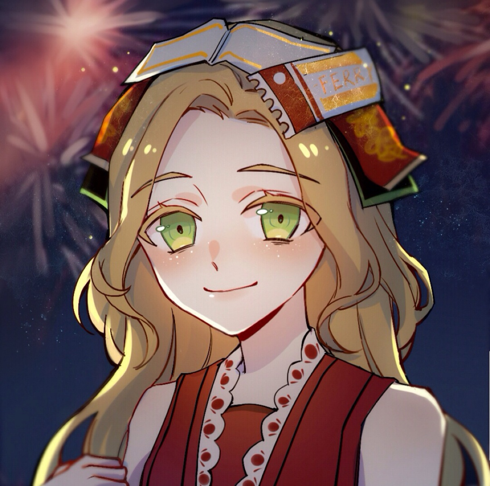

小女孩的故事充满了悲剧和谜团。她本身普通的女孩，却因为家庭变故和命运的捉弄，经历了常人无法想象的苦难。她的父亲在战乱中失踪，母亲在意外中去世，导致她孤苦无依。最终，她被神秘的力量引导至庄园，成为了这里的求生者。

小女孩可以在地图上放置“记忆碎片”，并通过这些碎片快速传送到其他求生者身边。这使得她能够在危急时刻迅速支援队友或躲避监管者的追捕。
小女孩可以将自己“附身”到一名队友身上，暂时与其共享视野并增加该队友的移动速度。这一技能让她在团队中扮演者重要的辅助角色，帮助队友更快地逃脱监管者的追击。
当小女孩靠近监管者时，她会让监管者的移动速度略微降低，给队友创造更多而逃生机会。尽管这一技能的效果微弱，但在关键时刻可能会成为翻盘的关键。
小女孩是一个非常注重团队协作的角色。她的技能设计使她能够在关键时刻支援队友，帮助团队在对抗监管者时获得优势。
由于小女孩的技能需要她靠近监管者或队友，这使她在比赛中承受较高的风险，但也能够在关键时刻做出决定性的操作。
小女孩的背景故事充满了悬念和悲剧，她的出现为游戏增添了更多的情感深度和剧情延展。